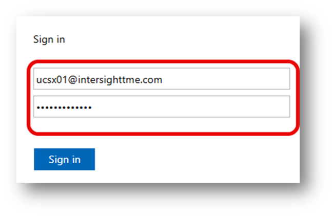
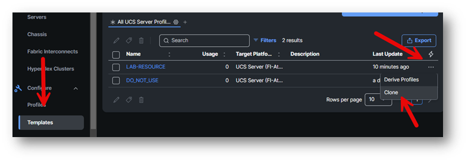
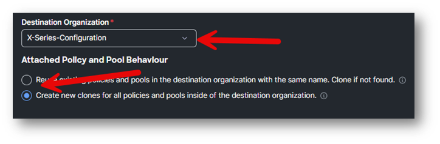
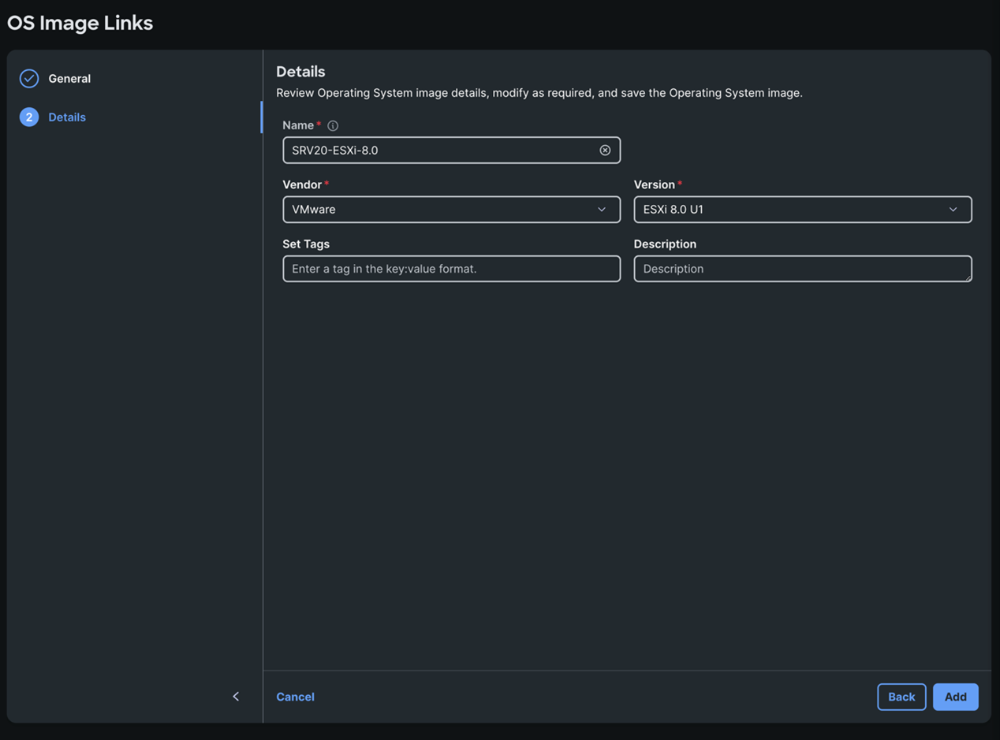
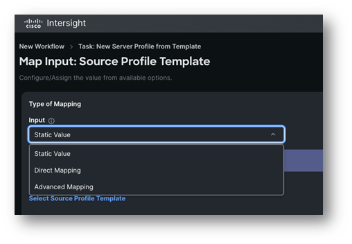
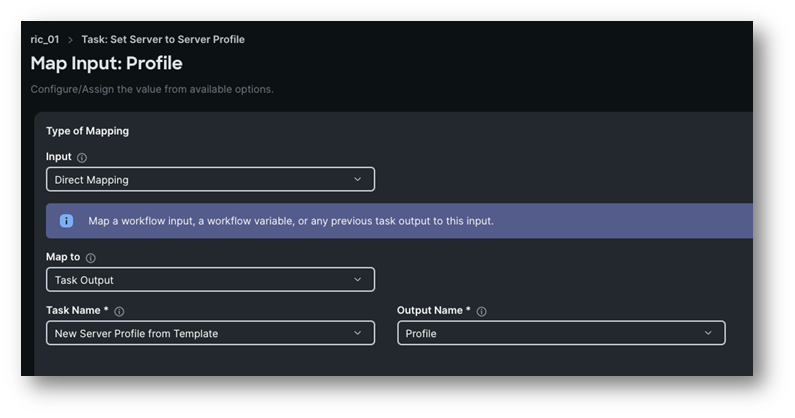
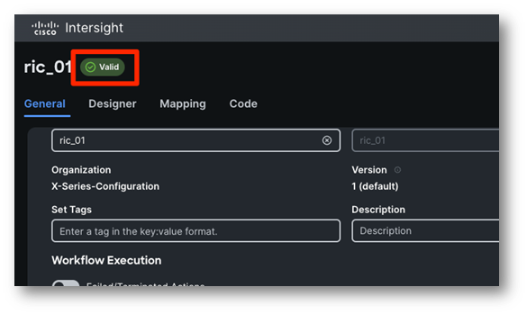
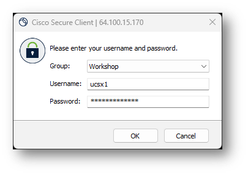

Instructions
Disclaimer
Disclaimer¶
This training document is to familiarize with Cisco Intersight and UCS X-Series nodes. Although the lab design and configuration examples could be used as a reference, it’s not a real design, thus not all recommended features are used, or enabled optimally. For the design related questions please contact your representative at Cisco, or a Cisco partner.
Scenario
Scenario¶
As an administrator you want to roll out an Operating System on different hosts. To save time you don’t want to create server profiles and install an OS manually. Working with Server Profile Templates and Automation, your life will be easier.
In this lab activity, you will learn how to work with Templates and clones. After the creation of the Server Profiles, you will create an automated workflow to install an OS on the server.
The flow of this lab will be:
- Day-0: Server Configuration
- Day-1: Deploying OS
- Day-2: Metrics and Troubleshooting
Network Diagram
Network Diagram¶
Because Intersight is a SaaS platform, there is no need to use VPN to the physical hardware, which is in RTP, North Carolina.
Here is a very simplistic overview of the Network Diagram:
Connecting to the Lab Components
Task 1: Connect To Intersight¶
You can connect with the laptop to Intersight and do all tasks in this lab. For this lab, every participant will have one physical server to configure.
NOTE: DO NOT CHANGE THE CHASSIS or DOMAIN POLICIES. 7 Persons next to you won’t be able to work on their lab.
The lab gear consists of 4 clusters which exist of an FI pair, a UCSX-9508 chassis and 8x UCSX-210c-M6 nodes, all connecting to a top of rack switch.
NOTE: Servers can have different CPUs, memory and Storage configuration. Even though these differences, every server has an M.2 drive to install the OS on and every task will work on any server.
Connecting to the Lab Components¶
In this lab activity, you will use the provided credentials to log into the Intersight account you’ll be using for the lab.
In the web browser, navigate to: Intersight. You will see the following screen:
On your “User Details Worksheet” find your unique username which is designated as [[Username]] and use the email [[Username]]@intersighttme.com to login to Intersight.
It is possible that you see the following message, this is normal as we are using unsigned certificates as part of the lab environment.

Click on Advanced.
Then click “Proceed to sts.intersighttme.com (unsafe)”.
On the “sts.intersighttme.com” login screen, enter [[Username]]@intersighttme.com as the email address again and enter the [[Password]] from the User Details Worksheet.
The following Table has the information about the login for Intersight.
NOTE: DO NOT USE THIS FOR THE VPN. Use your User Details Worksheet.

If you see this error message below, please try to login again.
When logging into Intersight as a specific user, Intersight will return you to the last page you were viewing the last time you were logged in.
Click on Dashboards on the left and then click on Servers at the top.
This is the start for everyone.
Task 2: Command Palette / User Label¶
To navigate Intersight in an easy way, you can use the Command Palette. Press CTRL-K to open the Command Palette. It looks like the following figure.
Search for server.
Click on Operate > Servers
The server names can be confusing, and one solution is to work with User Labels. First find the server which is assigned to you, this is written on your User Detail Worksheet. Click on the three dots next to your server.
Select System -> Set User Label

Set the User Label to SRVxx, which is the <

This will make it easier to find your server.
At this moment, it is possible you don’t see the user labels at the server overview. Click Settings next to server and select edit

Scroll down and select User Label and hit save.
Now you see the User Label and you can filter on it or move it to the first column.
Templates and Cloning
Templates and Cloning: Introduction¶
Each server does need a server profile. Instead of making a lot of the same server profile, you create a server template and derive this template multiple times. In a server profile template, vNIC and vHBA templates can be used.
Besides server profile templates, chassis and UCS domain templates are possible. These will not be handled in this lab.
Another way to have the same server profile, is to clone it. This has advantages and disadvantages. It is not the best practice to use clones, but because this is a lab, we want to show you what the limitations are.
One of the limitations is: Pools cannot be cloned. They will be created as new pools without any values in them. Policies, Templates and Server Profiles can be cloned.
First you are going to clone a server profile template and then make changes. Once it is a server profile template that you can use, you are going to derive this template.
NOTE:
Do NOT delete DO_NOT_USE Template Profile.
Do NOT delete or any server policy or vNIC policy without your -SRVxx at the end, where x is your pod number.
Task 1: Cloning¶
Let’s start with creating a clone of the LAB-RESOURCE UCS Server Profile Template. Go to Configure -> Templates on the left and select the UCS Server Profile Templates at the top. Click Three dots on the right of LAB-Resources and select Clone.

The destination Organization is X-Series-Configuration Select “Create new clones for all policies and pools inside of the destination organization.”

Click Next
Suffix Name for Cloned Policies and Pools should be -SRVxx, where x is your pod number.
The clone name can be SRVxx-ServerProfileTemplate, where x is your pod number. Set Tags to SRV:SRVxx, where x is your pod number.

Click Clone
The process of creating the clone is about 10 seconds. Now you see the new UCS Server Profile Template that you can work with.

Task 2: Verify the newly created clone¶
Select the three dots on the right and select Edit.
The view when Edit is clicked.

Just verify that the Organization is X-Series-Configuration. Click Next.
Verify if the policies that you see has the extension of -SRVxx, where x is your pod number.

Click Close
Task 3: Change the UCS Server Profile Template¶
As we already mentioned, Pools cannot be cloned. During the cloning of a Server Template Profile a new pool will be created, but without any UUID, MAC, IP, Etc in it.
First, let’s go to Templates (Left) and select the vNIC Templates Tab.

You have two vNIC templates created.
If there is a vNic template which is not in use, we need to fix the link to the vNic Template. You can identify which vNic needs to be fix by looking at the usage column.
If both of your vNIC-Template profile has a usage of 1, still follow the steps, just to understand the steps in case you need it in the real world.

Go to Policies and find the LAN-SRVxx policy -> Click on edit -> Next. Find the vNic which is not linked and click on the 3 dots behind it and link it to the correct vNic Template
Do not click on “Detach from Template”.
Follow the steps on the screenshot below:
Then click Update and Save
Now that we’ve fixed the link to the vNic template we can continue with the next steps.
Go to the vNic Template page. Click the three dots on the right next to one of your vNIC-Template and select Edit. It is better to start with vNIC-Template A.
Click Next
Click on the Bin of the Selected Pool.

Select Pool and select MAC-Pool of the Shared Pool with Org UCSX-LAB-RESOURCES


Click Save
Repeat these steps also for the vNIC-Template-B-SRVxx, where X is your POD number.
Go to the Templates tab on the left.
Select the UCS Server Profile Templates Tab.
The Server Profile Template was cloned and thing should first be corrected, before we can derive the Server Template Profile.
Click on Edit next to your cloned Server Profile Template.
Click Next.
Click the Bin icon next to the Selected UUID Pool.

Click Select Pool and select UUID-Pool from the Shared Pool with Organization UCSX-LAB-RESOURCES.
Click Next
Click the Edit Pencil of IMC Access

Click Next
Click on the Bin icon next to the Selected IP Pool.

Click on Select IP Pool and select UCSXKVMPool from the Shared Pools with Organization UCSX-LAB-RESOURCES

This is the result:

Click Save
Click Next and click again Next. Click Next.
You are now at the Summary of the Server Profile Template.

Click Close.
Task 4: Create UCS Server Profile from Template¶
Select the three dots on the right of you newly create UCS Server Profile Template and select Derive.
Do not assign it to a server and select Assign Later.

The Number of Profiles to derive should be “1” and click Next.
Rename it to: SRVxx-ServerProfile, where x is your POD number and the Organization is X-Series-Configuration.
Click Next.
You see now the summary.

Click on Derive
Go to Profiles (Left) and select UCS Server Profiles.
Look at the newly create UCS Server Profile.

You will see SRVxx-ServerProfile at the Profiles / UCS Server Profiles.
NOTE:
We won’t assign the Server Profile because we will use Intersight Automation to do that!
Repository
Repository¶
In this lab activity, we’ll learn about using Cisco Intersight to perform operating system (OS) installations, including some of the options when performing operating system installs and some of the best practices.
Before we dive into performing an OS installation, allow us to provide a bit of information on how OS installation works with Intersight.
OS installation takes place using UCS vMedia feature and is completely automated by Intersight. There are two images that are required to perform the operation…
OS image: This is the OS image (ISO file) that you are intending to install
Server Configuration Utility (SCU): This is a utility provided by Cisco that enables automated unattended OS installation (i.e. OS customization using a configuration file such as a kickstart file during installation)
Both images above should be hosted on an image repository (shared via CIFS, NFS or HTTPS) which the target servers being imaged can access over the network. We’ll see this image repository in just a bit as we perform an OS installation.
There are three main modes (or options) for OS install depending on your requirements. Selecting a mode tells Intersight where to get the configuration file that will be used to create a unique configuration on the server, such as a kickstart file for Linux-based operating systems. Here is a bit more information on each mode:
Cisco Mode: Simplest approach for getting started with OS installation and Intersight. For supported operating systems Intersight provides an out of the box validated template to use for the configuration file. This is the quickest way to get an OS up and running, however you cannot edit the provided configuration files.
Custom Mode: This mode is similar to the Cisco mode, however it allows the user to upload a customized configuration file to use for unattended OS configuration during install. You can add your own variables and configuration parameters to further customize the OS to your requirements. You will use this mode during your OS installation operation.
Embedded Mode: This mode assumes the file or files necessary for OS configuration are embedded within the ISO image, therefore there is no external configuration file required.
As mentioned above, we need to make sure we have both the OS image and the SCU image available on a repository (shared via CIFS, NFS or HTTPS) and we need to make sure Intersight is aware of this repository.
In Intersight, Click on System -> Software Repository
The “Software Repository” page is where we can tell Intersight where to find various types of images and files such as firmware, OS, SCU and configuration files. In the case of OS installation, we’ll look at both the OS images and the SCU images.
Click on the “OS Image Links” tab.
On the “OS Image Links” tab, we can see that we already have an OS image configured which we’ll use for the OS installation. However, for practice we will add the same OS image again so you get familiar with the steps.
Click on Add OS Image Link

Select the X-Series-Configuration Organization
Select the HTTP/S option
Enter this File Location: https://172.20.70.90/images/VMware-ESXi-8.0.U1a-21813344-Custom-Cisco-4.3.1-a.iso

Click Next
Enter the following details
Name: SRVxx-ESXi-8.0
Vendor: VMware
Version: ESXi 8.0 u1

And click Add
Simply observe the information provided for the OS image, it’s simply which protocol is the image shared over (CIFS, NFS or HTTPS) and the location of the image on the fileshare on the network. Please DO NOT EDIT this OS image as this will be used for all attendees in the lab.
Now we’ll observe the SCU image as well. Click on “Software Repository” in the left-hand menu.
Now click on the “SCU Links” tab.
You can see there already is a link to an SCU image and that is what you will use in the next steps. However, we will create a new link so you can learn important aspects when creating the link.
Click on Add SCU Link
Select the X-Series-Configuration Organization
Select the HTTP/S option
Enter this File Location: https://172.20.70.90/images/ucs-scu-6.3.2c.iso

Click Next
Name: SRVxx-SCU-6.3.2c
Version: 6.3.2c (this is mandatory but not used yet, so what you enter doesn’t matter)
Supported Models: All (this is mandatory but not used yet, so what you enter doesn’t matter)
Click Add
Automation
Automation: Introduction¶
In this lab activity, you will leverage the server profile template you created to onboard new servers in an automated fashion.
Cisco Intersight Automation, formerly known as Intersight Cloud Orchestrator, is a comprehensive solution designed to streamline and automate IT operations across various environments. This platform offers an integrated set of tools that allow IT teams to automate and manage infrastructure, applications, and workflows from a single, cloud-based interface. The goal of this lab section is to create an automation that addresses the following:
- Create a new server profile from a server profile template
- Map a server to this newly created server profile
- Deploy the server profile
- Install an Operating System (ESXi 8.0u1) in a unattended fashion
Task 1: Create A New Workflow¶
From Intersight, under Automate click on Workflows, then Create Workflow. You will be brought to the General tab of the workflow designer, which is the first of four tabs.

Let's describe what those tabs are used for:
-
General: This is where you configure overall specs for your workflow, such as display name, tags, organization, description as well as inputs, outputs and variables
-
Designer: This is the design canvas, where you can drag and drop tasks like "Lego bricks" to create a service blueprint, that is a workflow
-
Mapping: Here you can view or edit the mappings among tasks and/or workflow inputs of outputs in a graphical way
-
Code: From here, you can have a live code representation of the workflow you are creating. This is useful for troubleshooting purposes or for advanced topics, out of scope for this lab.
You should be in the General tab. As mentioned, this is where you can specify the specs of your workflow:
-
Display Name: Is a friendly name that can be changed at any time.
- Value: Assign an arbitrary name, preferably in the format "workflow _
"
- Value: Assign an arbitrary name, preferably in the format "workflow _
-
Reference Name: Is the workflow name as seen by the system, this needs to be unique and can't be changed once set. It defaults to the Display Name but can only contain letters (a-z, A-Z), numbers (0-9), hyphen (-), period (.) or an underscore (_)
- Value: Keep the default value as it's rendered after you specified the Display Name
-
Organization: Is the organization this workflow belongs to
- Value: Ensure you are using the organization "X-Series-Configuration"
-
Under Workflow Execution you will find a switch called Failed/Terminated Actions. This allows the user to set whether to enable retry for workflow executions or enable automatic rollback in case of failure. This is especially useful when you want to rollback succeeded tasks in a failed workflow execution to get back to a clean state. Automatic Rollback can be enabled for workflow that failed, get cancelled or both
- Value: We don't need this for the lab, keep the switch OFF
-
Enable Debug Logs: When true, workflow debug log info will be generated for each task. Enabling this flag will capture request and response details as debug logs in Intersight.
- Value: Check to switch it ON
-
Workflow Inputs: Are data placeholders the users will populate when executing the workflow. For instance, this could be a server selection, a virtual machine name or any data you want your users to provide for a specific workflow execution
- Value: Ignore for now, we will create workflow inputs using another strategy, inline when doing mapping at the task level
-
Workflow Variables: Are data placeholders that can be used by tasks to update information. These variables can be mapped to workflow outputs or reused as inputs by other tasks.
- Value: Ignore for now, we won't use workflow variables in this lab
-
Workflow Outputs are data placeholders that will return outputs to the users after the execution. In case of nested workflows (workflows used as tasks in larger workflows) these can be used as inputs for other tasks or workflows
- Value: Ignore for now, we will create workflow outputs using another strategy, inline when doing mapping at the task level
Task 2: Compose The Workflow¶
Switch to the Designer tab. On the left, under Tools, you can see three subtabs:
-
Tasks: Contains the list of system and non-system (custom) tasks by category. A task is an atomic action you can perform against a target (i.e. create server profile, deploy new virtual machine, etc.)
-
Workflows: Contains the list of workflows that can be used as tasks (nested workflows) within a larger workflow. In this case, workflow inputs are treated as task inputs and workflow outputs are treated as task outputs
-
Operations: At the moment, Intersight automation offers three special tasks:
- Conditional Task: This task allows the creation of multiple branches that can be followed at execution runtime based on configured condition. An example would be taking different path based on a task output or a user choice
- Parallel Loop: This is a container task, whatever task gets dropped into this task, it will be execute n times in a parallel fashion. Where n is a configurable integer or can be rendered with a configuration template dynamically
- Serial Loop: This is a container task, tasks within this task will be executed sequentially until a counter expires or a configured condition is met. An example would be: "execute all tasks serially until the output of this task is "foo"
Move to the Tasks subtab.
Search the task New Server Profile from Template and drag it to the canvas as shown below:

Click the task and note a new panel has opened on the right, as shown below:

These are the properties of the task. Each task comes with Input, Outputs and can handle (use or manipulate) Variables.
Under General, you can set the task name and a description. For this lab, we will leave it as it is.
Move to the Inputs tab.
You can see a list of inputs, specific for this task. Each input can be mandatory or optional

This specific task has only one mandatory input, which is Source Profile Template, basically what is the template we will derive a server profile from. Let's go ahead and assign or Map, a value to this input. For the Source Profile Template input, click the Map button.
The form defaults to a Static Value type of mapping. However, we generally have three different types of mappings. Let's explore them:

-
Static Value: Assigns a value that will always be honoured at every execution. Based on the input type, you have the possibility to query the Intersight database (like in this case, where you can pull the list of all server profile templates configured for your account), set an arbitrary text string, set a number (Integer), etc.
-
Direct Mapping: Maps the value to either a Workflow Input, another Task output (which has to be positioned in the canvas before the current task), a Workflow Variable or an Environment Variable
-
Advanced Mapping: Is a way for advanced users to write Go template code in order to map values dynamically based on custom code. As mentioned, this is an advanced topic and out of scope for this lab.
For this input, we will go ahead and perform a static mapping. Under Type of Mapping select Static Value.
Click on Select Source Profile Template to get the list of the configured profile templates as shown in the picture below.
Select your student profile template “SRVxx-ServerProfileTemplate” then click Select in the bottom right corner.

Click Map in the bottom right corner to confirm.
Let's stop for a second and explore the anatomy of a task. You know that each task has inputs, outputs, the possibility to consume variables, a name and a description. Each task has also two exit conditions as you can see in the screenshot below:

By connecting these green and red dots, you can create paths based on your use case, for instance you can decide to execute a specific task if a previous task fails. Eventually, the workflow either fails or succeeds based on the outcomes of all tasks.
Now that we instructed the workflow to create a server profile out of a template, we want to map the created template to a server. In the Tools panel on the left side, search for the task Set Server to Server Profile. As soon as you start dragging the task under the New Server Profile from Template task, a green plus sign will appear. If you release the task over the plus sign, it will automatically be connected to the success line (the green line) of the New Server Profile from Template task as shown below:

Click on the Auto Align Workflow button to automatically align the tasks:

Before moving forward with the inputs, let's see how Intersight validates and saves the workflows.
Click the Save button in the top right corner. When you Save a workflow, Intersight will perform two actions:
- Save the workflow definition
- Validate the workflow
The green banner indicates the workflow has been saved:

However, you can also see there are 2 errors found! and the workflow transitioned into the Invalid state:

What's the problem here? The Set Server to Server Profile task is used in the workflow but it has two mandatory inputs (Profile and Server) to which we have not assigned a value. This means the workflow cannot be executed, although saved successfully. Let's fix this and move forward with the workflow definition, let's assign a value to the Profile and Server inputs for the Set Server to Server Profile task.
For the Profile input, click on Map. This time we are using a different type of mapping: Direct Mapping. As mentioned, we can make this value dynamic, so we are going to map this value to the Profile output of the New Server Profile from Template task. After all, we can't know the ID of the new profile in advance before it gets created!
- Input: Direct Mapping
- Map To: Task Output
- Task Name: New Server Profile From Template

As usual, click on the Map button in the bottom right corner to confirm the mapping.
For the Server Input, we will again use Direct Mapping, however this time we will create a Workflow Input inline, as we want the user to specify what is the target server before the workflow gets executed.
Click on the Map button, then select Direct Mapping, Workflow Input, Add Workflow Input as shown below:

A new form will open. You can notice all fields have been automatically filled with the right values based on the input type. Understanding all fields of this specific data type is out of scope for this lab. If you want you can have a look, when done click on the Add button
Final result:
- Input: Direct Mapping
- Map To: Workflow Input
- Input Name: Server
Click Map at the bottom right corner to confirm.
You should now be moved to the canvas again. Let's have a look at the General tab of the workflow:

Under Workflow Input you can now see the new input we just created. You can also check the Preview section, which shows a preview of the user experience at workflow execution, where in this case they can only specify a Server before starting the workflow execution.

Let's Save again. All errors disappeared and the workflow transitioned to the Valid state. This means that we can execute it! ...but not just yet :)

Now that you are familiar on how to use tasks and map their inputs, let's speed things up.
- In Designer, drag the Deploy Server Profile task after the Set Server to Server Profile task
- Inputs:
- Profile: Direct mapping to the Task Output: New Server Profile from Template task, Profile output
- Input: Direct Mapping
- Map To: Task Output
- Task Name: New Server Profile From Template
- Output Name: Profile
- Reboot Immediately to Activate: Static value and check the option. This will apply all changes before we move forward with the Operating System Install
- Input: Static Value
- Reboot Immediately To Activate: Checked
- Profile: Direct mapping to the Task Output: New Server Profile from Template task, Profile output

- In the Tools panel, click on Workflows and drag the Operating System Install task (nested workflow) after the Deploy Server Profile task
- Here are the Operating System Install task Inputs:
- Server: Direct mapping to the Server workflow input
- Input: Direct Mapping
- Map To: Workflow Input
- Input Name: Server
- OS Install Inputs: create a new workflow input using Direct Mapping as you have done for the Server input on the Set Server to Server Profile task.
- Input: Direct Mapping
- Map To: Workflow Input
- Click on “Add Workflow Input”
- Server: Direct mapping to the Server workflow input

- Click Add
- Map it
- Save the workflow and it should be valid again
Move back to the General tab of the workflow, you should now have something like this:

In theory, we can now execute the workflow, however if you have a look at the Preview section at the bottom section, there is a ton of inputs to fill in! Sometimes, we want to simplify workflow definition and spare our users to provide unnecessary inputs. In a real-world scenario, this depends on who is supposed to execute workflows: power users may want to specify all bits and bytes, while entry level engineers may not even have the necessary domain knowledge, so we only expose a limited set of inputs.
For this lab, let's use a specific feature for Workflow Inputs: default values.
Edit the OS Install Inputs workflow input by clicking on the pen icon behind it:

Check Set Default Value option:

Basically, here you can set some defaults for our target users. In this specific case, those inputs will not even be exposed. If you check the Allow User Override option as well, the default value will still be set but it will also be visible, and the user can override the value. In our case, we will leave the Allow User Override option unchecked.
Let's set default values for the following sub-inputs, it works just like the Static Value input type mapping you already had the chance to work with:
- OS Image: ESXi 8.0u1a
- Vendor: VMware
- Installation Mode: Cisco
- Vendor: VMware
- NetworkDevice (the management interface which will receive the mgt IP address): vmnic0
- SCU Image: ucs-scu-6.3.2c.iso
Click Save when done, then Save again in the top right corner to save and validate the workflow. In the Preview section, you can now see that we have much less inputs!
Let's go ahead and execute the workflow.
Task 3: Execute The Workflow¶
There are several ways to execute a workflow (please just READ, in this lab we are going to document only one of the following ways:
- From the Automate, Workflow Intersight section (Workflow Designer), clicking the context button, then Execute
- Within the workflow itself, using the Execute button
- Scheduling the workflow execution instead of executing right away. We support two types of workflow execution scheduling:
- One time. You can define execution time and date
- Recurring, using the Repeats option. Here you can set the first execution time as well as the start time cadence (Daily, Weekly, Monthly, etc.) and the end time condition (Never, on a specific day or after an arbitrary number of executions). You can also specify the minimum failure threshold, that is the number of failed executions the system can tolerate before suspending the schedule (manual intervention will be required)
For this lab, we are going to execute the workflow from the Workflow Designer.
If you are not already there, navigate to Automate, Workflows, My Workflows. Then click on the context button of your workflow and Execute the workflow as shown below:
These are the inputs we decided to expose to the users. Go ahead and fill the inputs with the following values. If not specified, leave it blank or keep the default:
- Organization: X-Series-Configuration
- Server: The server you have assigned. Please make sure you are not selecting someone else's server or it will compromise the rest of the lab for everyone. If you scroll to the right, the user label is visible. One note: as you select the server, also copy its name, it will be easier for the next input as you need to specify the server twice.
Click Select
- This is how we coded the workflow and there is a way to expose this input only once. However, this will require more advanced capabilities like Go Templates which are out of scope for this lab
-
Server: This is the second time you specify the server, copy the server name you used before in the search, it will be easier to retrieve among all the others. This time the user label is not visible. Make sure both of the server names are the same and corresponding with the server name on your User Work Sheet.
-
VLAN ID: Leave it empty as the traffic will be untagged
- IP configuration Type: DHCP
- DHCP IP Version Type: IPv4
- Hostname: This is arbitrary. If possible use the SRVxx, where x is your POD number.
- Root: Although arbitrary as well, if possible use UCSX@Cisco123 which is the password for your account. This way in case of problems, proctors can easily help you
- Target Disk Type: Local Disk
Click on Execute. The workflow will take approximately 55 minutes to complete.
In the meanwhile, let's monitor its execution.
If you are already on the history tab you can ignore this part. From the Workflow Designer, click on your workflow to edit it. You will notice the last tab, called History. Click it.
On the left side, you will see your workflow tasks and progress tracking, so you know what is the current task being executed.

On the right side, you have a drop down which is set to the latest execution (the one you just triggered). If you had executed this workflow in the past, you will have the chance to "go back in time" and check inputs, outputs and outcomes of past workflow, like shown below:

Feel free to explore, Workflow Logs, Workflow Inputs and task specific Logs, Inputs and Outputs as the workflow gets executed. Eventually, when the workflow will finish with success, you will also have access to Workflow Outputs, which in this case we haven't set any.
Although the workflow has just started, we can start checking its effects on the system as it runs. Click on the X button in the top-right corner to exit the workflow view.
You will notice a spinning wheel with a number in the top-right corner, this is the number of running workflow in this moment. By clicking on it, you will see a different view which shows In Progress workflows. Click on your workflow (by default it will have the name of the workflow, unless you have changed it at execution time). From here, you can have more details on the workflow execution, including its execution time and other useful metadata. Feel free to explore, when done, exit this view by clicking the X button.
Of course the operating system hasn't been installed yet, but more than likely we already have our profiles derived from the template and deployed to your server. Let's have a look.
Navigate to Configure -> Profiles -> UCS Server Profiles as shown below:

From here, you can see that a new server profile has been already derived from the template and it's currently Validating.
NOTE:
It is possible, due to rare race conditions, that the OS install will fail as the server will try to mount the image before the server profile finishes activation. If this is your case, you will notice it after 7-8 minutes from the execution. A solution could be to have a Sleep Task (Under Tools, Tasks, CoreTasks) right before the Operating System Install task. You can set a value of 600 seconds (10 minutes) to ensure the Operating System Install tasks gets executed after the server profile has been activated:
If you are adding this step AFTER the workflow has failed, make sure to unassign the server profile to your server.
Feel free to monitor the workflow as it runs or just have a break! This is the expected outcome after approximately 50-55 minutes:
Time For A Break
Time For A Break¶
Please relax and take a 30 minute break.

Server Inventory
Server Inventory¶
Before we dive into the server inventory, please go to Servers and click on your assigned server. In this example we are going to look at SRV-2 or RTP91-FI6454-01-1-2
Click on your assigned server to view the inventory.
At the General Tab, you will information about the server, like the serial number, number of CPUs with the Cores, Memory, PID, Firmware version, Alarms and much more.
It is always nice to look at the inside of the server. Virtually that is possible when clicking the TOP view.

Click on Tab Inventory and expand all.
Walk through every option and verify if the server has a M.2 Controller. This is a must for another task. Also make note if the server has NVMe Drives (Controller NVME-Direct-U.2 Drives)
If you go to the UCS Server Profile (Top Bar), and the server profile is attached to the server, you see the policies that are active for this server.
When you are doing this part, while the Execution of the workflow isn’t finished yet, you will see the status Validating and maybe a “Activate Requires Reboot” after the policy. This is normal behaviour.
Look at which IP address the Management IP of the server did get:
And here is a view of the vNICs/vHBAs that are configured for the profile.
** If you have vHBA, here you can find the WWPN ID’s for the SAN.
Here is an example of the HCL Validation. It is possible your view is different, because this server was configured a bit differently and has an OS installed with incompatible drivers.

The Topology view shows the connections between the FI, IFM and the node with vNICs (If configured).

Currently, we are skipping the Metrics part. There is a Task which walk-through the different Metrics in Intersight.
The connectivity Tab shows information about the node, vNIC, Adapter, Virtual Group, etc.

Troubleshooting
Troubleshooting: Introduction¶
When you server is not showing up correctly in Intersight you might want to try some steps to correct the issue.
This could be failures during discovery, incomplete inventory or an alarm on your server that you might want to clear. Keep in mind most of these operations are disruptive procedures which you can’t do in your production environment, but this lab is perfect for it. You will also test vNic failover by disabling and enabling your vNic’s.
Task 1: Connect To VPN¶
This is only required for some tasks, but you might as well set it up now so it’s there when you need it. First open the Cisco Secure Client and connect to [[VPN IP]].

When you try to connect you could be presented with this screen:

That means you will need to stop blocking untrusted servers. Please click on “Change Settings”

The disable the “Block connections to untrusted servers” and try to connect again.
Now you will see a warning that our VPN server has an Untrusted Server Certificate, please click on “Connect Anyway”.

Choose the “Workshop” group and enter your credentials which are the [[Username]] and [[VPN Password]] values from the User Details Worksheet.
IMPORTANT: The username is without @intersighttme.com, enter your username like we did below:

You should see this message, don’t forget to click Accept and now you have access to the VPN.

Task 2: Get The OS IP And Start A Ping¶
Launch the Tunneled vKVM by navigating to your Servers -> Actions -> Launch Tunneled vKVM
If you still have the tab open you can skip this step.

When you are on the vKVM page you will see the IP address that is automatically assigned to your ESXi host through DHCP

Open a terminal on your workstation and ping the IP address
Keep this ping running during all tasks in this scenario.
Task 3: Blade Rediscovery¶
Your server is in a good state and fully discovered in Intersight. Unfortunately – or luckily – we did not find a way to remove parts of the inventory so we can’t simulate an incorrectly discovered server but we will go through some of the step to rediscover your server. This is a non-disruptive operation and safe to try first.
Go to your server and then click on Actions -> System -> Rediscover

This will initiate a Blade Discovery and this is the first step to fixing your server. Monitoring the ping and the Discovery workflow to see if you observe any disruptions – there should be none.
The discovery will take about 4 minutes, monitoring the workflow to see which steps are taking to understand the impact this workflow might have.
Task 4: Decommission and Recommission¶
Sometimes your server still hasn’t discovered correctly, and you might want to do a more thoroughly rediscover. The way how to do that is by decommissioning and recommissioning your server.
Go to your server page and click Action -> System -> Decommission

Attention! This is a disruptive operation!
Read the pop-up message and click on Decommission.
You will see that the server is immediately not pingable anymore.
The decommission will start with an Undeploy Server Profile Workflow which will clear all the server identifiers like the MGMT ip, MAC address, UUID and turn the server off.

After the undeploy workflow you will see the Blade Decommission workflow. This will reset the server back to factory defaults and completely remove the device registration in Intersight. That is why sometimes this is also referred to as a Deep Rediscovery

Now if you which to Recommission the server you need to navigate to Fabric Interconnect -> [[IMM-Domain-Name]] FI-A or B doesn’t matter -> Connections -> Decommissioned Servers. Find your [[ServerName]] in the list and click the three dots behind it and choose Recommission

Accept the pop-up and you will see that the server is removed from the list of Decommissioned servers but is not yet in the Server list.
This will take about a minute or so and then a Blade Discovery will start. This Blade discovery will take longer as the server needs to boot. This might be a good time to get a fresh cup of coffee as it will take about 10 minutes. When the Blade Discovery is finished you will see that a Server Profile has already assigned itself to your server. You can find the Server Profile by going to:
Server -> [[ServerName]] -> UCS Server Profile -> Click on the Name of your Server Profile.
All you got to do now is deploy that Server Profile again by clicking on Action -> Deploy
Select “Reboot Immediately to Activate” and click on Deploy

The Deploy Worfklow will take about 7 minutes. When it’s finished the server will need to boot so enjoy another 10 minute break and feel free to talk to us while you wait.
Task 5: Power Cycle Chassis Slot¶
This operation can save you a trip to the datacenter when your server is not showing up in the chassis or when the server is non-responding to any operations.
Instead of reseating the server in the slot you can try to power cycle the chassis slot and see if this helps.
NOTE:
! Before you do this step make sure that all workflows for your server are finished !
In order to reset the chassis slot you must go to Chassis -> [[Chassis Name Of Your Domain]] -> Click on the Chassis in the details section -> Actions -> Power Cycle Chassis slot

Select the right slot for your server, which is the last digit of your [[ServerName]].
ATTENTION! This is a disruptive operation, your server will reboot.

When you hit Power Cycle the server will power off.
After the Chassis Slot power cycle is complete make sure to power your server on again by going to Server -> [[ServerName]] -> Actions -> Power -> Power On
Task 6: Reboot Management Controller¶
Another common troubleshooting step is to reset the management controller of your server. This may be needed when you server is showing certain errors that seem non persistent. The reboot of the management controller is non disruptive.
Before you do this step make sure that all workflows for your server are finished.
To reboot your management controller go to
Servers -> your Server -> Actions -> System-> Reboot management controller

This will kick off a workflow and a subsequent Blade Discovery workflow. You can monitor the ping the see that there is no impact to your Operating System.
Task 7: Testing VNIC Failover¶
Go to Servers -> [[ServerName]] -> Inventory -> Network Adapters -> UCSX-V4-Q25GML -> Interfaces -> Click on the three dots behind mgmt - > Disable (Active)

Now look at the ping and see that you might have lost just 1 ping
Go to the Connectivity tab and you will see that 1 uplink of the vNic is down, this might take some time, make sure to refresh the page after 1 minute.

Go back to your vNic and enable it again
Using the vNic Enable / Disable methods and the Connectivity tab allows you to force certain traffic to go over a specific FI, which can help in troubleshooting networking issue.
Metrics
Metrics: Introduction¶
Metrics give you an idea of your environment and gives you data, which you can use for decisions.
In this section we will go over the Server Metrics and Explorer. There are other metrics available in Intersight and you can explorer those on your own. Fabric Interconnect, Chassis do have different metrics which can be viewed when you click on them or in Explorer.
Task 1: Server Metrics¶
Each Compute device has certain metrics.
Let’s go back to Servers and select your server.
On the bar, you see Metrics. Click it.
Here you see the Host Power and Temperature of the server.

Click on the icon next to the mini graphic of Host Power
An exploded view is now visible. Change the setting to last month.

The granularity for a Time Interval of “Last Month” can have the following values:
When the Time Interval is set to “Last 1 Hour”, 1min and 10 min Granularity is possible.
The 1 min needs an IMM Advantage license.
Task 2: Explorer¶
Explorer is a new feature in Intersight. It will give you metrics about different devices and parameters.
During the creation of this document, the whole environment wasn’t up and running, and therefore, you don’t see much traffic/values in the following screenshots.
This Explorer feature will improve and more will be added.
On the right side, select Explorer.
Note: Keep in mind, when you have the Advantage License Tier option, the data is collected every minute, but the granularity is still at 10 min.

For the first metrics, we are selecting:
Host Power and Status -> Host Power -> Maximum

Click on “Group By” and select Host Name
Select a time interval of Last Month to see nicer graphs.
Here is the current result:
The limit is already set to 5.
If you want to see the 8 FI set the limit to 8.

And here is the result where you see the 8 FI’s.

Disable this metric (Slide next to “Host Power – Maximum” and Add Metric for a new metric.

Select:
- Metrics: Network Interface -> Operational Link Speed -> Maximum
- Filter By: Host Type equals Fabric Interconnect
- Group By: Host Name
- Limit: 5

The result you see are in Bps (Bytes per Second.)
This is for every network related metric. Keep this in mind that it is NOT bps (bits per second.)
In this case the Max link is 25 GBps or 200 Gbps.
To find the power usage of one chassis, you need to know the chassis identifier.
One easy way to get this, is to go to the Chassis you want to know the details and select metrics.
On the left, go to Operate -> Chassis / Select RTP91-FI6454-04-1 (Chassis name) / Click Metrics. (On the top)
Look for the Power with PSU1 as Endpoint.
Expand it and click on View in Explorer

Click on Filter By and you will see:

The right Identifier is now chosen, but there is only one PSU and we want to have all PSUs to see the power consumption of the chassis.
Remove the Name = PSU1 and type in that field Name. Then select name and select contains.

Instead of choosing a PSU from the list, type PSU and hit enter.

Now you see the power consumption of the total chassis. If you select a time interval of one week, you can see that we had issues in the lab.